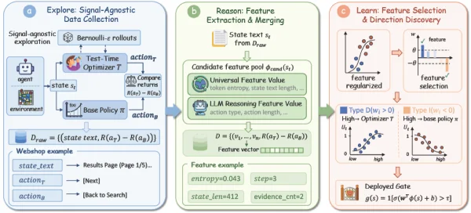

Same Signal, Opposite Meaning: Direction-Informed Adaptive Learning for LLM Agents
Neural Information Processing Systems (NeurIPS), 2026
The same uncertainty or difficulty signal can indicate opposite compute utility across environments and backbones. DIAL learns when additional test-time computation actually helps instead of assuming a fixed signal direction.